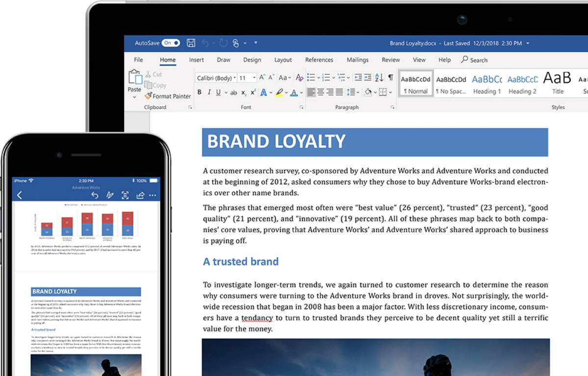
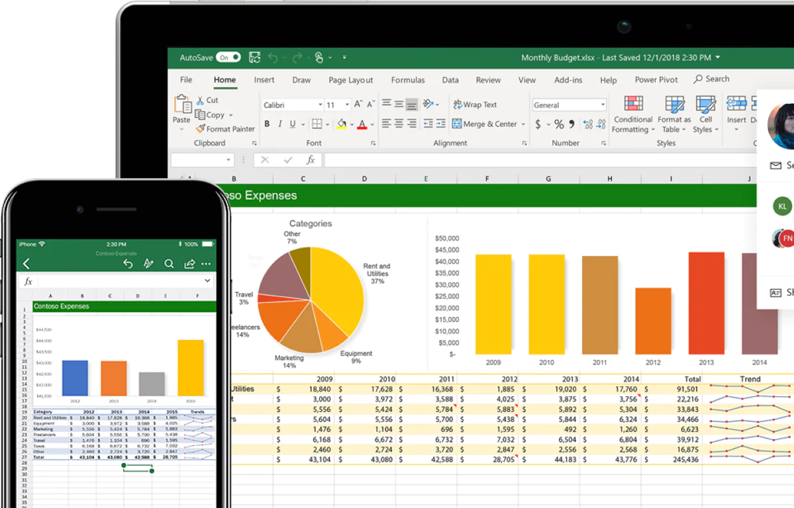
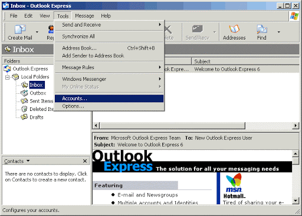
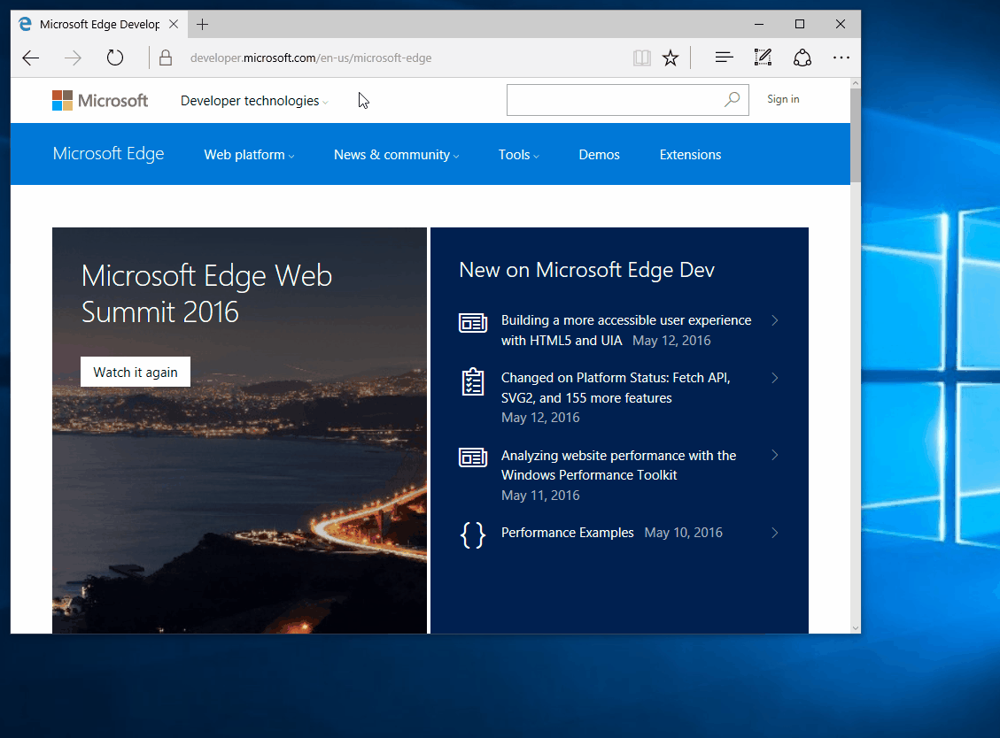

COMPUTER SOFTWARE
The computer will not work without software. Software also call programs are the instructions that tell the computer what to do and how o do it. The two main categories of software are system software and application software. The system software also called the operating system (OS) actually runs the computer. This software controls all the operations of the computer and its devices. All computers use system software and without the system software the application software will not work. The most common OS on a PC is the Windows operating system and for the Mac computer it would be the Mac operating system.
Application software is a program that allows users to a specific task on the computer. There are a number of different types of application software available to do many of the tasks we do daily. Four examples of common application software and what they are used for are:
Word Processing Application
One word processing program is Microsoft Word. This program allows
you to type letters, assignments and do any other written activity
on the computer.

Spreadsheet Application
Microsoft Excel is an example of a spreadsheet program. One can use
this program to create charts and do calculations.

E-mail Application
Outlook Express is an e-mail program that allows you to receive and
send e-mails.

Internet Application
Internet Explorer is a program that allows you to get connected to
the Internet and look at Web sites like the one you are reading
now.

It is important to note that when you buy a computer the computer comes with the operating system and some software already installed. You may have to buy more software and install them on the computer. Install means to load the software onto the hard disk of the computer so that you can run or use the software.